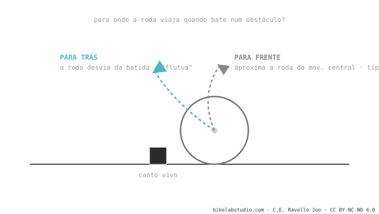

O axle path é o caminho que o eixo da roda traseira desenha ao comprimir a suspensão. Pode ir para frente (o comum: aproxima a roda do movimento central) ou para trás (rearward: a afasta). O caminho para trás engole melhor as batidas de canto vivo —por isso as bikes high-pivot "flutuam"— mas estica a corrente (chain growth). É uma peça da cinemática de suspensão.
Duas bikes podem ter o mesmo curso e absorver as batidas de forma totalmente diferente. Boa parte disso é decidida por onde a roda viaja.
Quando a sua roda bate numa raiz, você prefere que ela vá para cima (de frente contra a batida) ou para trás-acima (desviando dela)? Essa decisão, feita engenharia, é o axle path.
Ao comprimir a suspensão, o eixo traseiro não sobe em linha reta: traça um arco. Para onde esse arco aponta é decidido pelas posições dos pivôs do quadro.

Uma batida de canto vivo (uma raiz atravessada, um degrau) empurra a roda para trás-acima. Se o axle path vai nessa mesma direção, a roda acompanha a batida em vez de freá-la: você perde muito menos velocidade e a traseira se sente mais "engolidora". Essa é a mágica das high-pivot. Mas como a roda se afasta do movimento central, a corrente se estica e aparece o pedal kickback — por isso essas bikes levam uma polia (idler) que o neutraliza.
O caminho que o eixo traseiro segue ao comprimir: para frente (comum) ou para trás (rearward). Os pivôs decidem.
O seu axle path vai bem para trás: a roda desvia da batida em vez de bater nela. O preço é chain growth, que a polia idler controla.
Diga o modelo e te dizemos para onde a sua roda viaja e que caráter isso dá. Fale com a gente pelo WhatsApp
© 2026 BikeLab Studio. Conteúdo sob CC BY 4.0: você pode copiar, traduzir e publicar, inclusive com fins comerciais. A citação é obrigatória. Sem atribuição, a licença é revogada automaticamente (CC BY 4.0, §6.a) e o uso passa a ser violação de direitos autorais: solicitamos a retirada do conteúdo e sua desindexação. · Design e propriedade: Carlos Ravello Joo